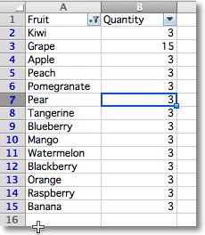

Using filters and sorts
It’s possible to filter single range of values in a worksheet by adding an autofilter. If you need to filter multiple ranges, you can use tables and apply a separate filter for each table.
Note
Filters and sorts can only be configured by fastpyxl but will need to be applied in applications like Excel. This is because they actually rearrange, format and hide rows in the range.
To add a filter you define a range and then add columns. You set the range over which the filter by setting the ref attribute. Filters are then applied to columns in the range using a zero-based index, eg. in a range from A1:H10, colId 1 refers to column B. Fastpyxl does not check the validity of such assignments.
from fastpyxl import Workbook
from fastpyxl.worksheet.filters import (
FilterColumn,
Filters,
)
wb = Workbook()
ws = wb.active
data = [
["Fruit", "Quantity"],
["Kiwi", 3],
["Grape", 15],
["Apple", 3],
["Peach", 3],
["Pomegranate", 3],
["Pear", 3],
["Tangerine", 3],
["Blueberry", 3],
["Mango", 3],
["Watermelon", 3],
["Blackberry", 3],
["Orange", 3],
["Raspberry", 3],
["Banana", 3]
]
for r in data:
ws.append(r)
filters = ws.auto_filter
filters.ref = "A1:B15"
col = FilterColumn(colId=0) # for column A
col.filters = Filters(filter=["Kiwi", "Apple", "Mango"]) # add selected values
filters.filterColumn.append(col) # add filter to the worksheet
ws.auto_filter.add_sort_condition("B2:B15")
wb.save("filtered.xlsx")
This will add the relevant instructions to the file but will neither actually filter nor sort.

Advanced filters
The following predefined filters can be used: CustomFilter, DateGroupItem, DynamicFilter, ColorFilter, IconFilter and Top10 ColorFilter, IconFilter and Top10 all interact with conditional formats.
The signature and structure of the different kinds of filter varies significantly. As such it makes sense to familiarise yourself with either the fastpyxl source code or the OOXML specification.
CustomFilter
CustomFilters can have one or two conditions which will operate either independently (the default), or combined by setting the and_ attribute. Filter can use the following operators: equal, lessThan, lessThanOrEqual, notEqual, greaterThanOrEqual, greaterThan.
Filter values < 10 and > 90:
from fastpyxl.worksheet.filters import CustomFilter, CustomFilters
flt1 = CustomFilter(operator="lessThan", val=10)
flt2 = CustomFilter(operator="greaterThan", val=90)
cfs = CustomFilters(customFilter=[flt1, flt2])
col = FilterColumn(colId=2, customFilters=cfs) # apply to **third** column in the range
filters.filter.append(col)
To combine the filters:
cfs.and_ = True
In addition, Excel has non-standardised functionality for pattern matching with strings. The options in Excel: begins with, ends with, contains and their negatives are all implemented using the equal (or for negatives notEqual) operator and wildcard in the value. For this to work properly, the value is always a string.
For example: for “begins with a”, is actually a*; for “ends with a”, *a; and for “contains a””, *a*. ? can be used to represent a single character. In regular expressions * is called greedy and ? non-greedy. Wildcards are escaped with the ~ (tilde) so that contains ~*``is serialised as ``~~~*.
To simplify creating filters in client code, Fastpyxl provides three specialised filters: NumberFilter; BlankFilter and StringFilter. These filters are all used only when creating filters. For convenience, you can use the the CustomFilter.convert() method to convert from a CustomFilter to a more specific filter.
NumberFilters
NumericFilters differ from CustomFilters only in that they are explicitly numerical:
from fastpyxl.worksheet.filters import NumberFilter, CustomerFilter
flt1 = CustomFilter(operator="lessThan", val=10)
flt1.val == "10"
flt2 = NumberFilter(operator="lessThan", val=10)
flt2.val == 10.0
BlankFilters
BlankFilters are used for excluding blanks and are not editable:
from fastpyxl.worksheet.filters import BlankFilter
blank = BlankFilter()
StringFilters
StringFilters have the folowing operators: contains startwith endswith and wildcard. To apply the filter in the negative, set the exclude attribue to True. Fastpyxl handles escaping automatically:
from fastpyxl.worksheet.filters import StringFilter
fil = StringFilter("contains", "xml", exclude=True)
StringFilters with the wildcard operator are the same as CustomFilters. This allows for allows for more sophisticated uses of the wildcards such as c?n which would match the terms cancan and contains, but not curtains; or c*n which would match all terms. Fastpyxl does not escape filters that use the wildcard operator.
Note
The wildcard syntax allows for even more sophisticated patterns with multiple wildcards. This functionality cannot be easily expressed using StringFilters and is not a design goal.
DateGroupItem
Date filters can be set to allow filtering by different datetime criteria such as year, month or hour. As they are similar to lists of values you can have multiple items.
To filter by the month of March:
from fastpyxl.worksheet.filters import DateGroupItem
df1 = DateGroupItem(month=3, dateTimeGrouping="month")
col = FilterColumn(colId=1) # second column
col.filters.dateGroupItem.append(df1)
df2 = DateGroupItem(year=1984, dateTimeGrouping="year") # add another element
col.filters.dateGroupItem.append(df2)
filters.filter.append(col)